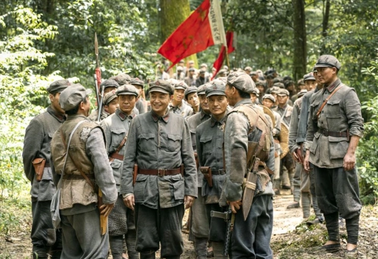
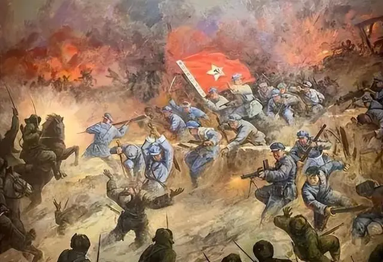
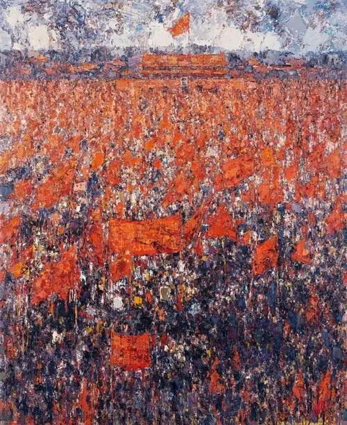
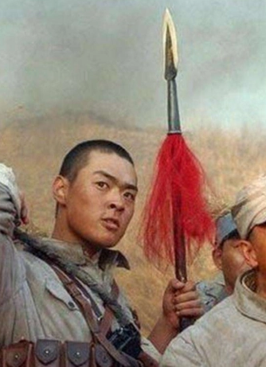
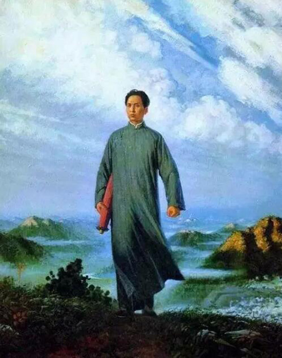
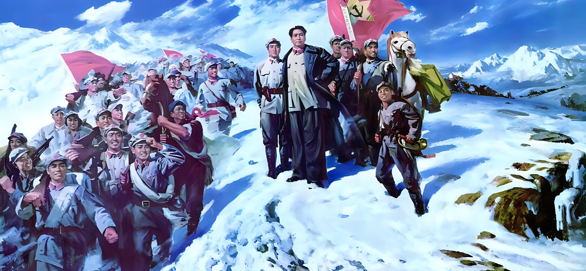

待到山花烂漫时，
她在丛中笑。
对毛泽东同志于社会科学领域
以及无产阶级革命斗争的巨大贡献致以最高敬意
人民，只有人民，才是创造世界历史的动力。
———人民史诗的最好诠释

唤起工农千百万，同心干，
唤起工农千百万，同心干，
不周山下红旗乱。

为有牺牲多壮志，
为有牺牲多壮志，
敢教日月换新天。

俱往矣，
俱往矣，
数风流人物，还看今朝。
改造世界，同时改造自己！
———无产阶级革命事业永垂不朽！
一万年太久，
只争朝夕。
雄关漫道真如铁，
而今迈步从头越。

今日长缨在手，
今日长缨在手，
何时缚住苍龙？
江山如此多娇，引无数英雄竞折腰
———随主席脚步，领略寥廓自然。

鹰击长空，鱼翔浅底，
万类霜天竞自由。
已是悬崖百丈冰，
犹有花枝俏。
具体问题具体分析是马克思主义活的灵魂
“让自己的思维能够正确反映客观规律”
实践、认识、再实践、再认识，
这种形式，循环往复以至无穷，
而实践和认识之每一循环的内容，
都比较地进到了高一级的程度。
我们的战略是“以一当十”，
我们的战术是“以十当一”，
这是我们制胜敌人的根本法则之一。
党内批评是坚强党的组织、增加党的战斗力的武器。
但是红军党内的批评有些不是这样，变成了攻击个人。
其结果，不但毁坏了个人，也毁坏了党的组织。
这是小资产阶级个人主义的表现。
不如马克思，不是马克思主义者。等于马克思，也不是马克思主义者。
只有超过马克思，才是马克思主义者！

孩儿立志出乡关，
孩儿立志出乡关，
学不成名誓不还。

红军不怕远征难，